A New Era of Molecular Simulation via Neural Samplers
Learning to sample equilibrium ensembles, from the energy alone
Yuanqi Du
Microsoft Research
Joint work
Joint work with
Mouyang Cheng*
MIT · MSR intern
ATLAS · JANUS
Denis Blessing*
KIT · MSR intern
ATLAS · JANUS

Carles Domingo-Enrich†
MSR New England
ATLAS · JANUS
Botao Yu
OSU · MSR intern
ATLAS
Gerhard Neumann
KIT
ATLAS
Mingda Li
MIT
ATLAS · JANUS
Maximilian Schebek
FU Berlin
JANUS
Jutta Rogal
Flatiron Institute
JANUS
ATLAS: A Foundation Neural Sampler for Amorphous Materials. Cheng*, Blessing*, Yu, Neumann, Li, Domingo-Enrich†, Du†. arXiv:2607.19198
JANUS: A Multimodal Foundation Neural Sampler for Disordered Materials. Blessing*, Cheng*, Schebek, Rogal, Li, Domingo-Enrich†, Du†. arXiv:2608.19116
JANUS: A Multimodal Foundation Neural Sampler for Disordered Materials. Blessing*, Cheng*, Schebek, Rogal, Li, Domingo-Enrich†, Du†. arXiv:2608.19116
* equal contribution · † co-corresponding
Roadmap
Today
1
The sampling bottleneck
why ensembles stay expensive, even with machine-learned potentials
2
Neural samplers
training without data; path weights
3
ATLAS
amorphous materials
4
JANUS
alloys and defects, beyond the canonical ensemble
5
Simulation to discovery
samplers as tools for discovery; open problems
Molecular simulation
From microscopic interactions to macroscopic behavior
$\pi(x)=\dfrac{\tilde\pi(x)}{Z},\qquad \tilde\pi(x)=e^{-\beta U(x)},\qquad Z=\displaystyle\int\tilde\pi(x)\,\dd x$
$\langle O\rangle=\mathbb E_\pi[O],\qquad F=-\beta^{-1}\log Z$
$\beta=\dfrac{1}{k_{\mathrm B}T}$
Given the energy function $U$, understanding a material at finite temperature is a sampling problem.
The sampling problem
The bottleneck: local moves get trapped
- Slow mixing. Crossing a barrier $\Delta$ takes $\sim e^{\beta\Delta}$.
- Correlated samples. Exact only as the chain length $\to\infty$.
- No amortization. Every temperature, pressure or composition is a new run.
- No free energy. $F$, $S$ and phase boundaries need extra machinery.
2D glassy states at $T=0.2$: parallel tempering needs $\mathbf{2\text{–}3\times10^{8}}$ energy evaluations for one converged free energy.
Metropolis et al. 1953 · Swendsen & Wang 1986 (replica exchange) · reference numbers: Cheng*, Blessing*, …, Domingo-Enrich†, Du†, ATLAS (2026)
The sampling problem
Machine-learned potentials made each step cheap, not the walk short
cost of a simulation = # energy evaluations × cost per evaluation↓ DFT → MLIP
Unchanged by MLIPs
The number of evaluations: $10^{6}$–$10^{9}$ for hard systems.
Machine-learned interatomic potentials
Replace DFT as the force field: near-DFT accuracy, orders of magnitude cheaper per call; universal MLIPs (e.g. MACE-MPA-0) cover most of the periodic table.
but each call is still a forward pass through $10^{6}$–$10^{8}$ parameters
This talk: neural samplers address this problem
Fewer evaluations × cheaper evaluations: the two efficiency gains multiply.
Behler & Parrinello 2007 · Batatia et al. 2022 (MACE) · Batatia et al. 2025 (MACE-MPA-0 foundation model)
Neural samplers
Neural samplers: learn the sampler instead of running a chain
$X_0\sim p_0,\qquad X_{t+1}\sim\Pf_\theta(\cdot\mid X_t)=\mathcal N\big(X_t+\mu^+_\theta(X_t,t)\,\delta,\ \sigma_t^2\delta\big),\qquad X_N\approx\pi\propto e^{-\beta U}$
amortized over T, P, μ, composition
path weights → exact averages & free energy
Noé et al. 2019 (Boltzmann generators) · Zhang & Chen 2022 · Vargas et al. 2023 · right panel: exact transport for this mixture (an ideally trained sampler)
Neural samplers · the line of work we build on
Training without data: how the field got here
2022–24 · a divergence on whole paths
$\mathrm{KL}\big(\Pf_\theta\,\big\|\,\Pb\big),\qquad\mathrm{Var}_{\mathbb Q}\Big[\log\dfrac{\mathrm d\Pb}{\mathrm d\Pf_\theta}\Big]$
Match generated paths to time-reversed paths from $\pi$; the log ratio is the path weight (coming up). But: backprop through the solver, no reuse of energy calls, mode collapse.
2024 · PDDS → iDEM: the right idea
Regress the score on the model's own samples; iDEM adds the replay buffer. Each step closer to the final loop.
But the debiasing sits inside the label: SMC weights (PDDS), an importance-sampled score $\nabla\log\frac1K\sum_k e^{-\beta U(x+s_t\varepsilon_k)}$ (iDEM). High variance → fails at scale, as our benchmark No trick, no treat showed.
2025–26 · fixed-point matching
Same loop, but the label is one force $\beta\mathbf F(X_N)$ at the model's own endpoint: no weights inside the regression, simulation-free, replay buffer.
Regression shapes each mode; it does not fix the mode weights.
ATLAS · JANUS = fixed-point matching + the 2022–24 path-weight loss, back as a regularizer for the mode weights.
Zhang & Chen 2022 (PIS) · Vargas et al. 2023 (DDS) · Berner et al. 2024 (DIS) · Richter & Berner 2024 (log-variance) · Vargas et al. 2024 (CMCD) · Phillips et al. 2024 (PDDS) · Akhound-Sadegh et al. 2024 (iDEM) · He*, Du* et al. 2025 (No trick, no treat) · Havens et al. 2025 (Adjoint Sampling) · Liu et al. 2025 (ASBS) · Blessing et al. 2026 (Bridge Matching Sampler) · Havens et al. 2026 (Flow Sampling)
Neural samplers · what made diffusion models work
Diffusion models: add noise, learn to reverse it
The generative models behind a decade of breakthroughs:
Images & video
Ho 2020 · Song 2021 · Rombach 2022
Protein design
RFdiffusion · Watson, Nature 2023
Biomolecular structure
AlphaFold 3 · Abramson, Nature 2024
Materials
MatterGen · Zeni, Nature 2025
Molecules & docking
DiffSBDD · Schneuing, Harris, Du et al., Nat. Comput. Sci. 2024 · DiffDock 2023
Weather
GenCast · Price, Nature 2025
Forward $\Pf$ (generation) and backward $\Pb$ (noising) traverse the same marginals $p_t$; their drifts differ by exactly the score:
$\mu^+_t(x)-\mu^-_t(x)=\sigma_t^2\,\nabla\log p_t(x)$
Learning a diffusion model = learning the score $\nabla\log p_t$ at every noise level.
Sohl-Dickstein et al. 2015 · Ho et al. 2020 · Song et al. 2021 · Nelson 1967, Anderson 1982 (time reversal) · left: exact score of a 7-mode mixture
Neural samplers · scores from data
With data: denoising score matching
Noise a data point with the backward kernel:
$X_t\sim\Pb(\cdot\mid X_N)=\mathcal N\big(\alpha_tX_N,\ s_t^2I\big),\qquad X_N\sim\pi\ \ (\text{data})$
Bayes' rule over the clean point gives the noised score:
$\nabla\log p_t(x_t)=\mathbb E_{\pi(x_N\mid x_t)}\big[\nabla_{x_t}\log\Pb(x_t\mid X_N)\big]=\mathbb E\Big[-\dfrac{X_t-\alpha_tX_N}{s_t^2}\,\Big|\,X_t=x_t\Big]$
denoising score identity: the noised score is the posterior-averaged kernel score; one clean sample gives an unbiased label
Regress the score network onto that label, the direction back to the clean point:
$\mathcal L_{\rm DSM}(\theta)=\displaystyle\int_0^1\!\lambda_t\;\mathbb E\,\Big\|\,s_\theta(X_t,t)+\frac{X_t-\alpha_tX_N}{s_t^2}\Big\|^2\dd t$
The minimizer is the conditional expectation of the label: the score $\nabla\log p_t$. Plain regression, so it scales.
But every label needs a clean sample $X_N\sim\pi$: exactly what we lack for a Boltzmann distribution.
Hyvärinen 2005 · Vincent 2011 (denoising score identity) · Ho et al. 2020 · Song et al. 2021 · left: exact score of the noised mixture ($\alpha_t=1$)
Neural samplers · scores from energy
Without data: target score matching
Same noising kernel; integrate by parts to move the gradient onto the target:
$\nabla\log p_t(x_t)=\dfrac{1}{\alpha_t}\,\mathbb E_{\pi(x_N\mid x_t)}\big[\nabla\log\tilde\pi(X_N)\big]=\dfrac{1}{\alpha_t}\,\mathbb E\big[\beta\mathbf F(X_N)\,\big|\,X_t=x_t\big]$
the noised score is the posterior-averaged force; $Z$ never appears
$\mathcal L_{\rm TSM}(\theta)=\displaystyle\int_0^1\!\lambda_t\;\mathbb E\,\Big\|\,s_\theta(X_t,t)-\frac{1}{\alpha_t}\,\beta\mathbf F(X_N)\Big\|^2\dd t$
① data → forces: physics enters through $\mathbf F=-\nabla U$, one force call per sample.
② but the expectation is still over $X_N\sim\pi$, the very thing we want to learn.
De Bortoli et al. 2024 (target score matching) · Albergo, Boffi & Vanden-Eijnden 2025 (stochastic interpolants) · Blessing et al., ICML 2026
Neural samplers · no data at all
Fixed-point training: the model proposes, the physics corrects
$s^{(k+1)}=\arg\min_s\displaystyle\int_0^1\!\lambda_t\;\mathbb E_{X_{0:N}\sim\Pf_{s^{(k)}}}\Big[\bar w\;\Big\|\,s(X'_t,t)-\frac{1}{\alpha_t}\beta\mathbf F(X_N)\Big\|^2\Big]\dd t,\qquad X'_t=\alpha_tX_N+s_t\varepsilon$
$\pi$ is a fixed point: if the sampler already produces $\pi$, the labels average to the exact score. ($\bar w$: the path weight, next.)
Blessing et al., ICML 2026 (Bridge Matching Sampler) · Havens et al. 2025 (Adjoint Sampling) · right: real run of the fixed-point rule on a 1D toy (force labels, path-weighted buffer)
Neural samplers · path weights
Path weights: time reversal is Bayes' rule in time
$p_t(X_t)\,\Pf(X_{t+1}\mid X_t)=p_{t+1}(X_{t+1})\,\Pb(X_t\mid X_{t+1})$
⟹
$\dfrac{p_N(X_N)}{p_0(X_0)}=\dfrac{\prod_t\Pf(X_{t+1}\mid X_t)}{\prod_t\Pb(X_t\mid X_{t+1})}$
intractable marginals = a ratio of tractable kernels: one network call per step, no Jacobians
Path weight $\;w(X_{0:N})=\dfrac{\tilde\pi(X_N)\prod_t\Pb(X_t\mid X_{t+1})}{p_0(X_0)\prod_t\Pf(X_{t+1}\mid X_t)}\;$ computable for any model; $W=-\log w$ is the work.
He, Hernández-Lobato, Du†, Vargas†, ICLR 2026 (RNE) · Crooks 1999 · right: a real path of the toy sampler with its kernels
Neural samplers · path weights
One derivation, every estimator
what we want: an integral against $\tilde\pi=e^{-\beta U}$
$I[g]=\displaystyle\int g(x_N)\,\textcolor{#E76F51}{\tilde\pi(x_N)}\,\dd x_N$
1
insert the backward kernels; they integrate to one
$=\displaystyle\int g(x_N)\,\textcolor{#E76F51}{\tilde\pi(x_N)}\,\textcolor{#4C72B0}{\prod_t\Pb(x_t\mid x_{t+1})}\;\dd x_{0:N}$
2
multiply and divide by the forward path density
$=\displaystyle\int g(x_N)\,\underbrace{\frac{\textcolor{#E76F51}{\tilde\pi(x_N)}\,\textcolor{#4C72B0}{\prod_t\Pb}}{\textcolor{#1F7A6F}{p_0(x_0)\prod_t\Pf}}}_{w(x_{0:N})}\;\textcolor{#1F7A6F}{p_0(x_0)\prod_t\Pf}\;\dd x_{0:N}$
3
read it as an average over generated paths
exact for any model with full support
$=\mathbb E_{\Pf}\big[\,g(X_N)\,w(X_{0:N})\,\big]$
$g\equiv1$
$Z=\mathbb E_{\Pf}[w]$
free energy$g=f$
$\mathbb E_\pi[f]=\mathbb E_{\Pf}[f\,w]\,/\,\mathbb E_{\Pf}[w]$
exact averages$\tilde\pi\to h\,\tilde\pi$
$\mathbb E_q[f]=\mathbb E_{\Pf}[f\,h\,w]\,/\,\mathbb E_{\Pf}[h\,w]$
steering · nextDu, blog: Pushing Probabilistic ML Out of Equilibrium, Part 5 · Jarzynski 1997 · Neal 2001 (AIS) · Du*, He* et al., NeurIPS 2025 (FEAT) · He, Hernández-Lobato, Du†, Vargas†, ICLR 2026 (RNE)
Neural samplers · steering
Steering: sample a tilted target with the same weights
1
tilt the target; same derivation with $\tilde\pi\to h\,\tilde\pi$
$q_N\propto h\,\pi,\quad h=e^{\eta r}\quad\Rightarrow\quad\text{weight }h(X_N)\,w$
2
a sharp $h$ makes one final weight noisy: switch it on along the path, with targets $q_t$
$G_t=\dfrac{q_{t+1}(X_{t+1})\,\Qb(X_t\mid X_{t+1})}{q_t(X_t)\,\Qf(X_{t+1}\mid X_t)}$
$W_t=-\log G_t$ is the work of one step; $\prod_tG_t$ telescopes to the full path weight.
3
SMC uses the work to reweight: $w\leftarrow w\,e^{-W_t}$; resample when the ESS drops.
4
APT uses the work to swap: one replica per level $q_t$; neighbours push through the learned transport and swap with probability $\min\{1,e^{-(W_\uparrow-W_\downarrow)}\}$. Exact samples leave at $q_N$.
No retraining: one base sampler reaches any tilted target. SMC uses the work to reweight, APT uses it to swap.
Wu et al. 2023 (twisted SMC) · He, Hernández-Lobato, Du†, Vargas†, ICLR 2026 (RNE) · Zhang, Potaptchik, He, Du, Doucet, Vargas, Dau, Syed 2025 (APT) · He, …, Du, Syed, Vargas, ICLR 2026 (CREPE)
Part I
ATLAS
A foundation neural sampler for amorphous materials
Mouyang Cheng*, Denis Blessing*, Botao Yu, Gerhard Neumann, Mingda Li, Carles Domingo-Enrich†, Yuanqi Du†
arXiv:2607.19198 (2026)
arXiv:2607.19198 (2026)
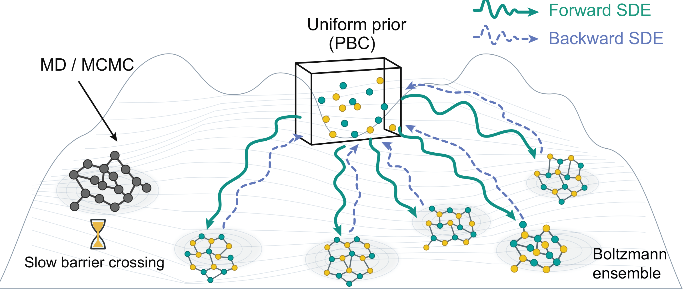
ATLAS · amorphous materials
Amorphous materials: properties come from ensembles
- Why they matter: disorder gives tunable mechanical, transport and optical properties.
- Why they are hard: below $T_g$, equilibration needs rare collective rearrangements.
- No data: no database of equilibrated amorphous ensembles.
left: real 2D Kob–Andersen snapshot at T = 0.2 (glass) vs an ordered binary crystal
ATLAS · what changes on the periodic cell
From diffusion to an interpolant on the periodic cell
Atoms live in a periodic box: the natural prior is uniform (an ideal gas), not a Gaussian. So ATLAS replaces Gaussian noising by a stochastic interpolant from the uniform prior to the target.
| so far: diffusion | ATLAS: interpolant on the cell | |
| prior $p_0$ | Gaussian $\mathcal N(0,I)$ | uniform on the periodic cell |
| path to $X_N$ | $X_t=\alpha_tX_N+s_t\varepsilon$ | $X_t=\mathrm{wrap}\big(X_0+\alpha_t\Delta+\gamma_t\varepsilon\big),\ \ \Delta=\mathrm{wrap}(X_N-X_0)$ |
| what we learn | the score $s$ | a velocity $b$ and the score $s$; generate with drift $b+\tfrac12\sigma_t^2\,s$ |
| score label | $\tfrac{1}{\alpha_t}\,\beta\mathbf F(X_N)$ | $\hat s=\beta\mathbf F(X_N)$, weight one at every $t$: no $1/\alpha_t$ on the torus |
| velocity label | not needed | $\hat b=\dot\alpha_t\,\Delta-\dot\gamma_t\gamma_t\,\hat s$: the bridge's own velocity |
$\mathcal L(\theta)=\displaystyle\int_0^1\mathbb E\Big[\big\|s_\theta(X_t,t)-\beta\mathbf F(X_N)\big\|^2+\big\|b_\theta(X_t,t)-\hat b\big\|^2\Big]\dd t$
Same fixed-point loop and the same path weights; only the prior, the bridge and a second head change.
Albergo, Boffi & Vanden-Eijnden 2023 (stochastic interpolants) · Blessing et al., ICML 2026 (Bridge Matching Sampler) · Cheng*, Blessing*, …, Domingo-Enrich†, Du†, ATLAS (2026), SI Alg. 1
ATLAS · method
ATLAS: an interpolant on the periodic cell, supervised by forces
- Uniform prior on the periodic cell; wrapped interpolant to the sample $X_N$.
- Force labels with weight one at every $t$; velocity and score from one network.
- One E(3)-equivariant GNN, conditioned on $T$ and composition.
- Local: train on small cells, sample large ones.
Cheng*, Blessing*, …, Domingo-Enrich†, Du†, ATLAS (2026) · Blessing et al. 2026 (BMS) · De Bortoli et al. 2024 · Schütt et al. 2021 (PaiNN) · animation: real KA snapshot with its Lennard-Jones forces
ATLAS · validation
One model from liquid to glass: 2D Kob–Andersen
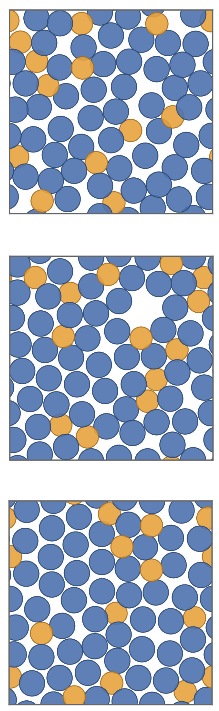
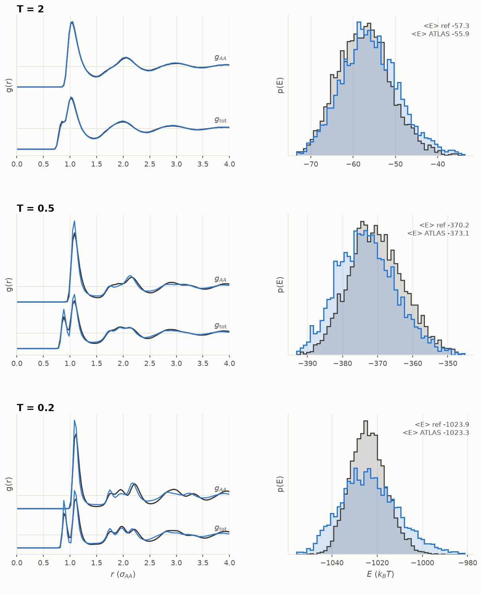
— PT-MCMC (reference) — ATLAS samples shaded: ATLAS ± 2 s.d. (bootstrap)
Kob–Andersen 80:20 Lennard-Jones mixture
$N=64$, $T\in[0.2,\,5]$: a standard model of glassy states
- $g(r)$ and $p(E)$ match parallel tempering.
- $p(E)$ checks the Boltzmann weights, not just the structures.
Cheng*, Blessing*, …, Domingo-Enrich†, Du†, ATLAS (2026), Fig. 2a (updated) · rows: T = 2.0, 0.5, 0.2
ATLAS · thermodynamics
Free energy and entropy with >500× fewer energy evaluations
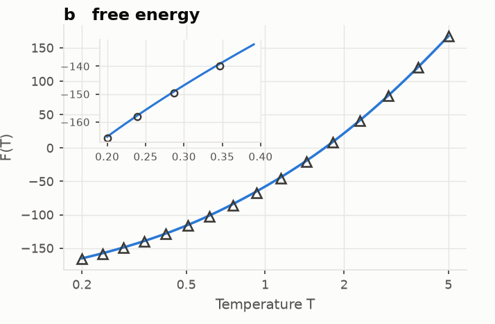
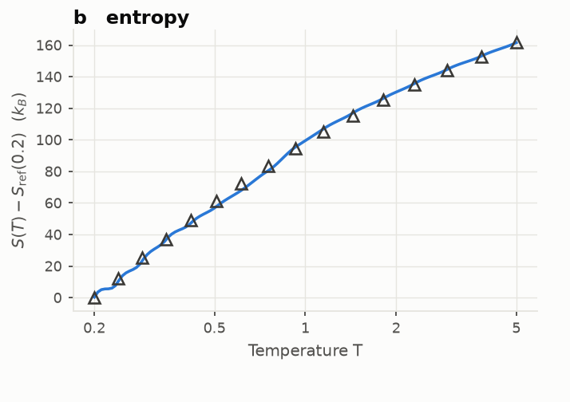
Path weights: $Z=\mathbb E_{\Pf}[w]$ anchors $F$ at high $T$, MBAR carries it to the glass; $S=(\langle U\rangle-F)/T$.
Glass at $T=0.2$: free-energy error $2\times10^{-3}$.
Cheng*, Blessing*, …, Domingo-Enrich†, Du†, ATLAS (2026), Fig. 2b,e · Shirts & Chodera 2008 (MBAR) · reference: converged PT-MCMC with ≈4.5×10⁸ evaluations
ATLAS · transferability
Train on 64 particles, sample 512
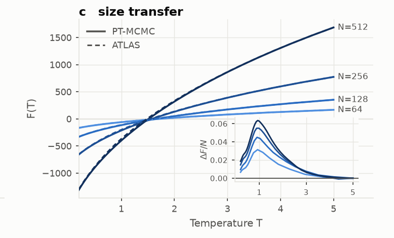
Free energy per particle within ~3% of PT-MCMC up to $N=256$.
Cheng*, Blessing*, …, Domingo-Enrich†, Du†, ATLAS (2026), Fig. 2c (updated) · left: real KA configurations at N = 128, 256, 512
ATLAS · rare events
Rare events by steering: umbrella windows
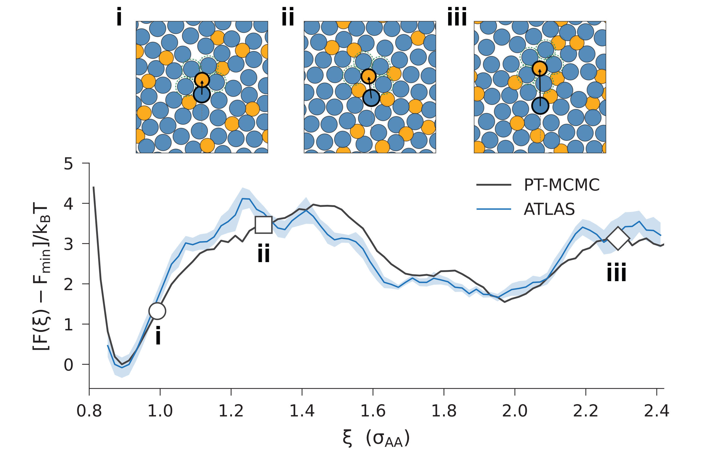
Path weights: window $k$ is a tilted target $q_k\propto\pi\,e^{-\beta u_k(\xi)}$, sampled by SMC reweighting with the work; the $Z_k$ stitch into $F(\xi)$.
Cage escape at $T=0.2$: $\Delta F^\ddagger=4.20\pm0.38\,k_{\mathrm B}T$ vs $3.97\,k_{\mathrm B}T$ (PT-MCMC), with no MD.
Torrie & Valleau 1977 (umbrella sampling) · Cheng*, Blessing*, …, Domingo-Enrich†, Du†, ATLAS (2026), Fig. 2d · left: schematic
ATLAS · metallic glasses
Steering metallic glasses: experiment and properties
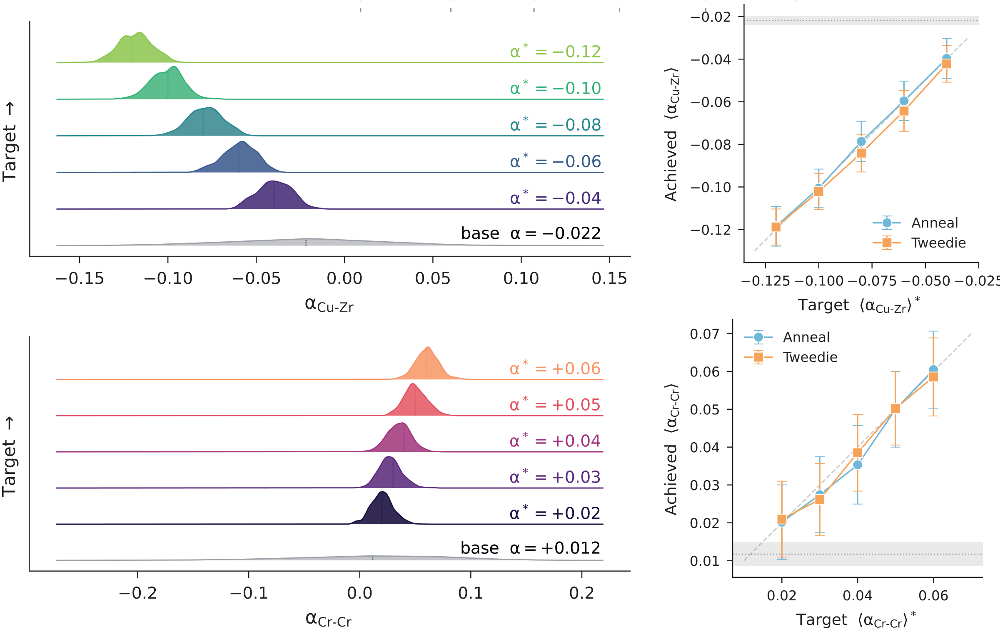
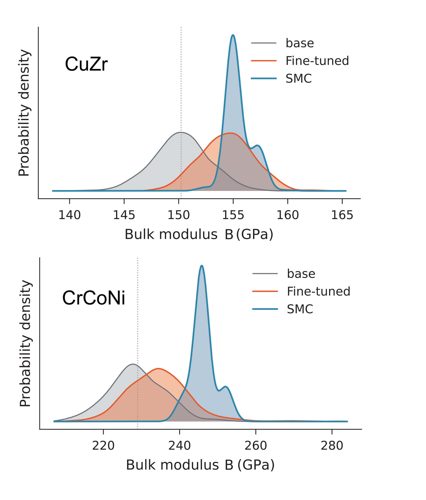
CuZr, CrCoNi
EAM potentials, $N=128$
Short-range order: base ensembles match experiment; SMC toward $q_N\propto\pi\,e^{-\eta(\alpha-\alpha^\ast)^2}$ moves the whole distribution.
Bulk modulus: reward the Tweedie estimate $\hat X_N(X_t)$; SMC, reweighting with the work, enriches rare stiff glasses.
Cheng*, Blessing*, …, Domingo-Enrich†, Du†, ATLAS (2026), Fig. 3c,d · Cowley 1950 · He, Hernández-Lobato, Du†, Vargas†, ICLR 2026 (RNE)
ATLAS · foundation model
A foundation model across composition space
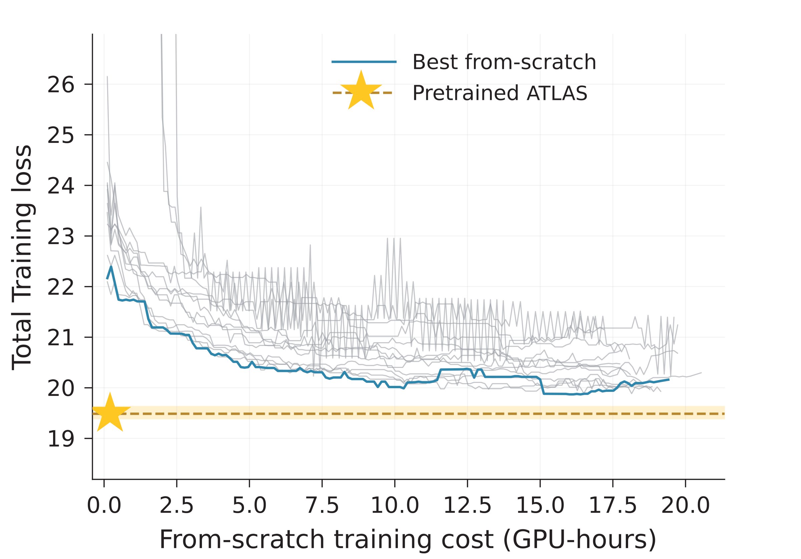
36 GPU-h
one-time pretraining
~20 GPU-h
per composition, from scratch
~300×
less compute over 480 compositions
Zero-shot on a new composition already beats the best from-scratch run.
Cheng*, Blessing*, …, Domingo-Enrich†, Du†, ATLAS (2026), Fig. 4b, SI Alg. 1 · left: the composition-amortized training loop · right: total training loss vs. from-scratch cost
ATLAS · agentic design
Agentic inverse design: LLM agent × ATLAS × universal MLIP
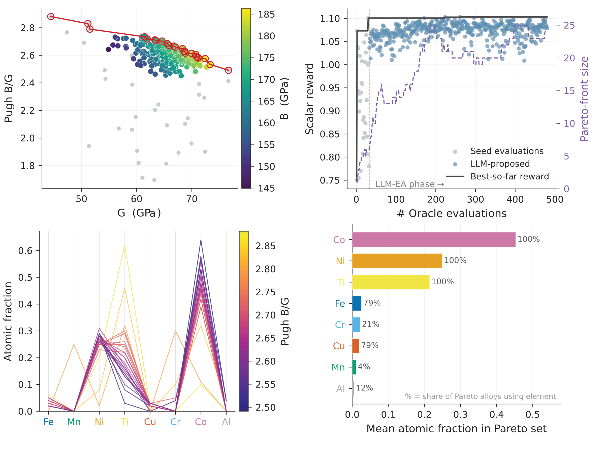
Task: ≤5 of 8 elements; MACE-MPA-0; objectives $B$, $G$, $B/G$.
Result: Pareto front converges within 480 ATLAS evaluations.
Design rules: Co, Ni, Ti in every Pareto alloy.
Cheng*, Blessing*, …, Domingo-Enrich†, Du†, ATLAS (2026), Fig. 4d · left: schematic of the asynchronous agent loop · candidates are model-guided hypotheses for higher-fidelity validation
Part II
JANUS
A multimodal foundation neural sampler for chemically disordered materials
Denis Blessing*, Mouyang Cheng*, Maximilian Schebek, Jutta Rogal, Mingda Li, Carles Domingo-Enrich†, Yuanqi Du†
arXiv:2608.19116 (2026)
arXiv:2608.19116 (2026)
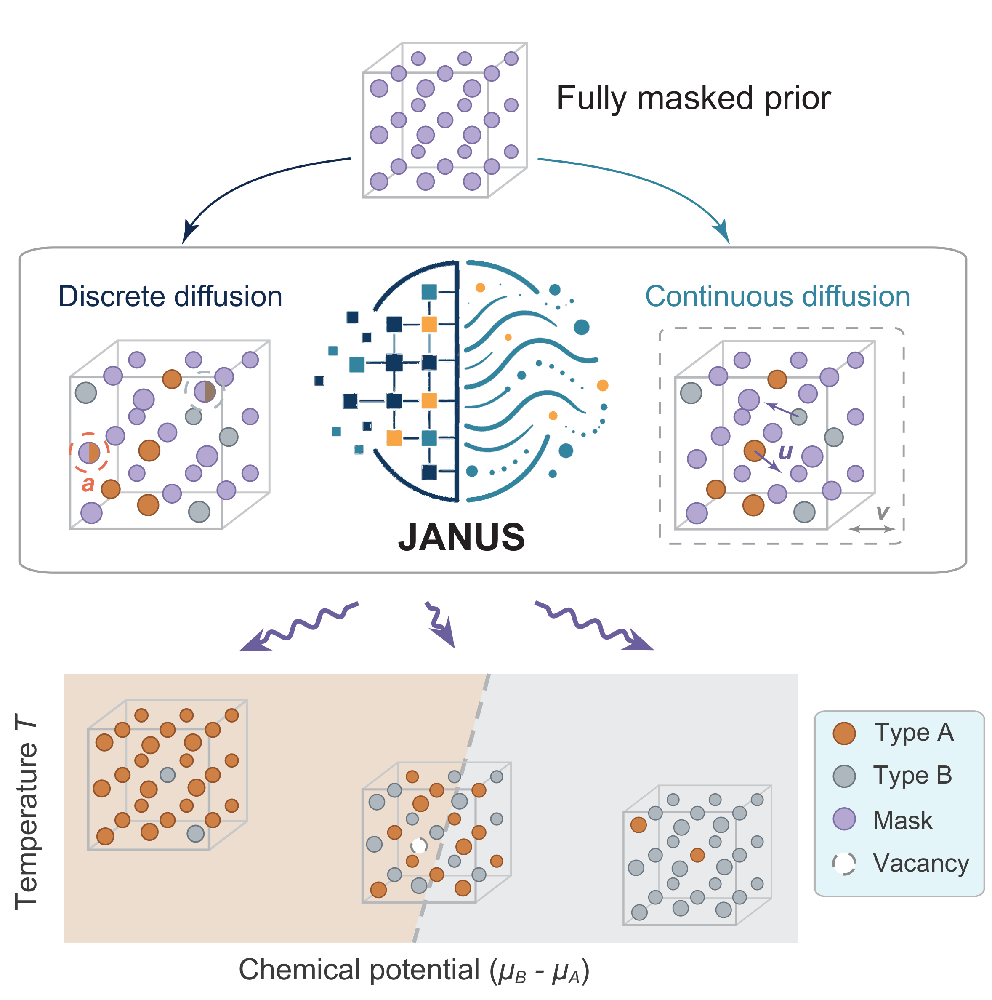
JANUS · beyond NVT
Beyond the canonical ensemble
$p(x)\propto e^{-\beta U}$
$p(x,v)\propto e^{-\beta(U+Pv)}$
$p(a,x,v)\propto e^{-\beta(U+Pv-\mu\cdot N)}$
$p(a,x)\propto e^{-\beta(U-\mu\cdot N)}$
Mixed state: who sits on each site (discrete $a$) × how far from it $(x,v)$; path weights carry over unchanged.
Blessing*, Cheng*, …, Domingo-Enrich†, Du†, JANUS (2026) · Schebek et al. 2024 (conditional Boltzmann generators for phase diagrams)
JANUS · method
JANUS: masked discrete × continuous diffusion
- Species: masked diffusion, each site revealed once; path weight in closed form.
- Displacements, volume: the same interpolant with velocity $b$ and score $s$, from physics-informed Gaussian priors.
- One equivariant GNN, conditioned on $(T,\Delta\mu)$.
Austin et al. 2021 · Sahoo et al. 2024 · Shi et al. 2024 · Ou et al. 2025 (masked diffusion) · Blessing*, Cheng*, …, Domingo-Enrich†, Du†, JANUS (2026) · animation: toy lattice
JANUS · discrete training signal
What is the discrete analogue of a force?
- With data: cross-entropy against the one-hot clean symbol.
- Without data: $K$ substitution energies (one batched call) give the exact conditional $\rho_i(b\mid\mathbf a_{-i},\mathbf x)$.
- The soft label is the label, as the force is for the score: its conditional expectation is the exact posterior$q^\star_i(b\mid\mathbf a_t,\mathbf x_t)=\mathbb E\big[\,\rho_i(b\mid\mathbf a_{-i},\mathbf x)\,\big|\,\mathbf a_t,\mathbf x_t\big]$cross-entropy against $\rho_i$ regresses onto it; Boltzmann is a fixed point
- One-hot labels from its own samples: every model would be a fixed point.
Blessing*, Cheng*, …, Domingo-Enrich†, Du†, JANUS (2026) · He, Blessing, Cheng, Du, Domingo-Enrich 2026 (discrete fixed-point samplers, arXiv:2610.01739) · animation: toy nearest-neighbour energy
JANUS · validation
Validation: Ising, and Cu–Ni with all three channels
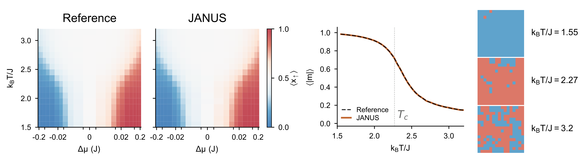
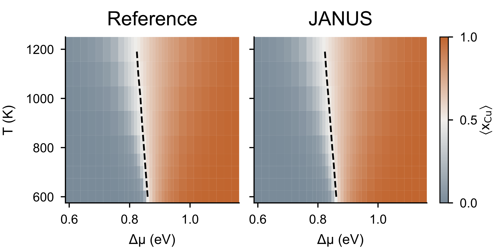
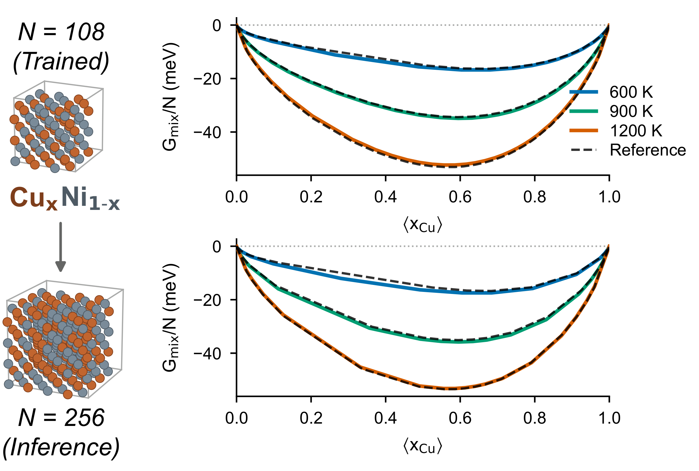
- 2D Ising: one model over $(T,\Delta\mu)$ matches Wolff MC through $T_c$.
- fcc Cu–Ni: species, displacements and volume match reference MC.
- Size transfer: trained at $N=108$, accurate at $N=256$.
Blessing*, Cheng*, …, Domingo-Enrich†, Du†, JANUS (2026), Fig. 2
JANUS · phase diagrams
From free energy to phase diagrams
- Fixed composition: reveal exactly $n$ B atoms.
- Path weights: $Z_n=\mathbb E_{\Pf}[w]$, so $G(n)=-k_{\mathrm B}T\log Z_n$.
- Common tangent on $G_{\mathrm{mix}}(x)$ → coexisting phases.
- fcc vs bcc: one model per lattice, on a common absolute scale.
Frenkel & Ladd 1984 · Schebek et al. 2024 · Blessing*, Cheng*, …, Domingo-Enrich†, Du†, JANUS (2026) · left: illustration with a regular-solution model
JANUS · phase diagrams
Phase diagrams with ~10³× fewer energy evaluations
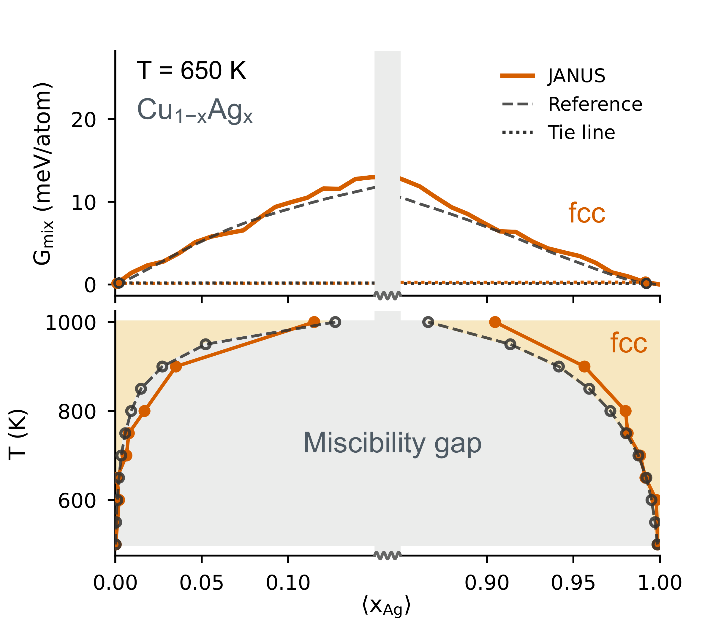
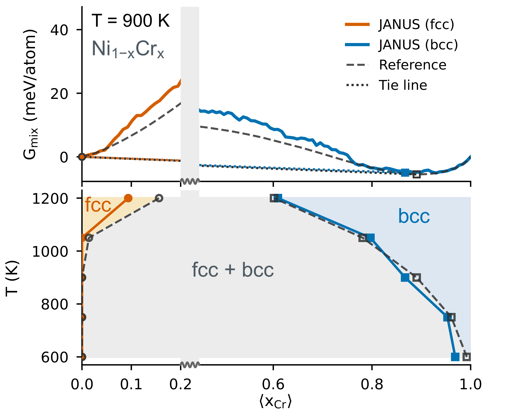
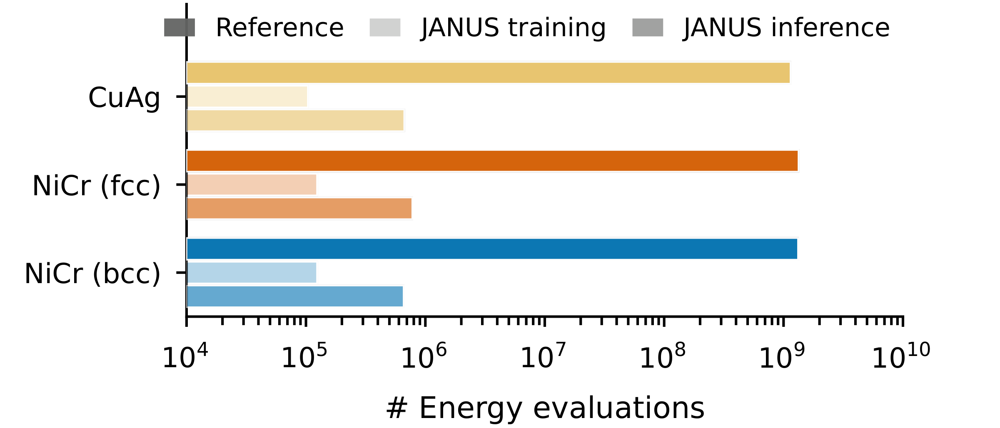
Energy evaluations: reference MC (dark) vs JANUS (light), training included.
Miscibility gap (Cu–Ag) and fcc/bcc competition (Ni–Cr) recovered.
Blessing*, Cheng*, …, Domingo-Enrich†, Du†, JANUS (2026), Fig. 3a–c
JANUS · steering & design
Steering and agentic design of alloys
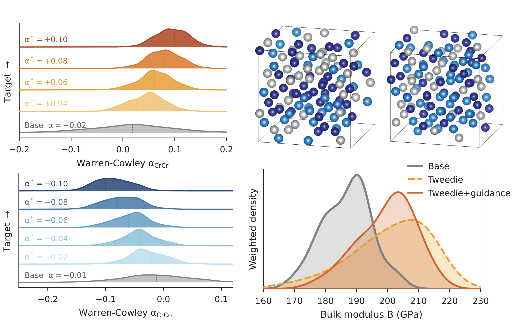
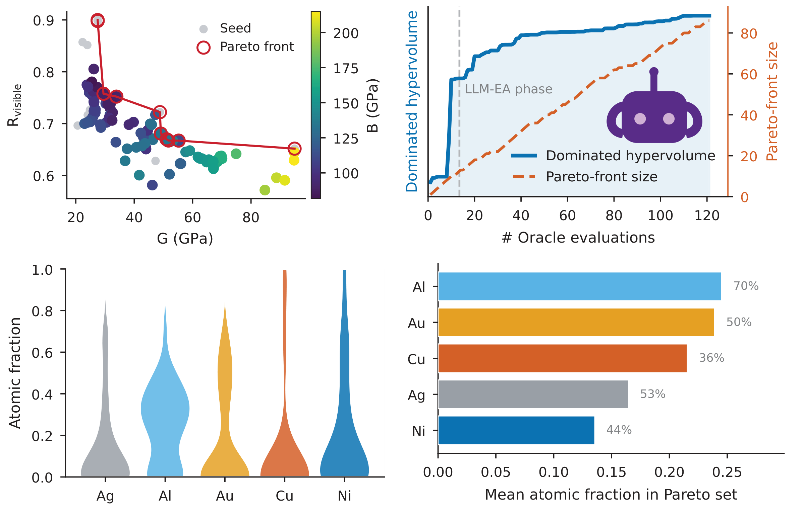
CrCoNi, 800 K: base SRO matches experiment; the same SMC, reweighting with the work, steers $\alpha$ and $B$ (species factors cancel in $G_t$).
LLM agent proposes Δμ (Ag–Al–Au–Cu–Ni) for stiffness, ductility and reflectance; hypervolume saturates in ~120 evaluations.
Blessing*, Cheng*, …, Domingo-Enrich†, Du†, JANUS (2026), Fig. 3d,e · Zhang et al. 2020; Sheriff et al. 2024 (SRO in CrCoNi)
JANUS · discovery
Grand-canonical sampling for defect discovery

Sampler: one $\mu VT$ model per host (Si, diamond): 15 dopants + vacancy.
Screen: 8,000 samples → enriched pairs and triplets → hybrid DFT.
Found: known centres re-emerge (Si E centre, Ge–V); new: S–Ti (Si), B–O–O (diamond).
Blessing*, Cheng*, …, Domingo-Enrich†, Du†, JANUS (2026), Fig. 4 · left: schematic of the screening loop · candidates require excited-state validation (ZPL, Huang–Rhys, spin relaxation)
Summary
One recipe, two foundation samplers
| ATLAS | JANUS | |
|---|---|---|
| materials | amorphous: glasses, metallic glasses | crystalline disorder: alloys, dopants, vacancies |
| state | positions on the periodic cell $\mathbb T^{dN}$ | species $\mathbf a$ (discrete) + displacements $\mathbf u$ + log-volume $v$ |
| ensembles | $NVT$ | $NPT$, $\Delta\mu NPT$ (semi-grand), $\mu VT$ (grand canonical) |
| labels | forces $\beta\mathbf F(X_N)$ | forces, virial + single-site conditionals $\rho_i$ |
Generate → label with exact local statistics → interpolate → regress
Cheng*, Blessing*, …, Domingo-Enrich†, Du†, ATLAS, arXiv:2607.19198 · Blessing*, Cheng*, …, Domingo-Enrich†, Du†, JANUS, arXiv:2608.19116 · Blessing et al., ICML 2026
Outlook
A new era: simulation becomes a query
Train once, query many: simulation becomes a query.
Outlook
Open problems
- Mode weights: local labels cannot see basin masses.
- Hardest free energy: heavy-tailed weights in deep glasses and miscibility gaps.
- Scale: $10^{3}$–$10^{4}$ atoms (interfaces, dislocations).
- Generality: off-lattice insertion and deletion, flexible cells, melting.
- Dynamics and theory: kinetics; convergence guarantees.
Toward a universal neural sampler, as broadly useful as today's universal MLIPs.
Thank you!
Questions are very welcome.
Mouyang Cheng
Denis Blessing
Carles Domingo-Enrich
Botao Yu
Gerhard Neumann
Mingda Li
Maximilian Schebek
Jutta Rogal
ATLAS · arXiv:2607.19198 · JANUS · arXiv:2608.19116
Related: Bridge Matching Sampler (ICML 2026) · FEAT (NeurIPS 2025) · RNE (ICLR 2026) · discrete fixed-point samplers (arXiv:2610.01739)
Related: Bridge Matching Sampler (ICML 2026) · FEAT (NeurIPS 2025) · RNE (ICLR 2026) · discrete fixed-point samplers (arXiv:2610.01739)
yuanqidu@microsoft.com · yuanqidu.github.io · @YuanqiD